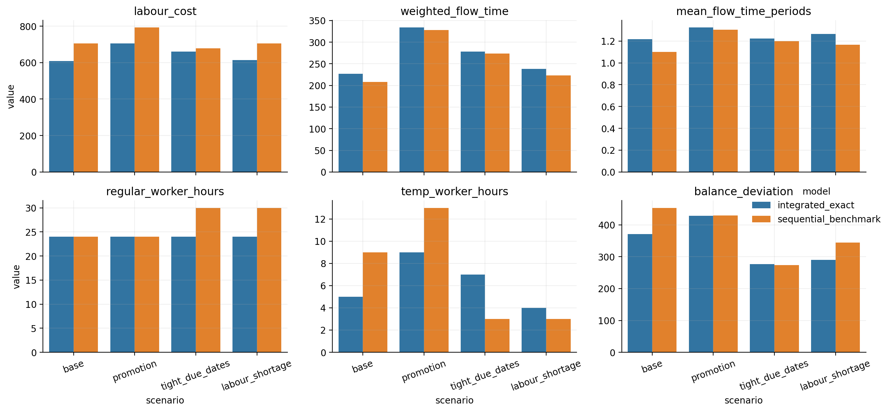
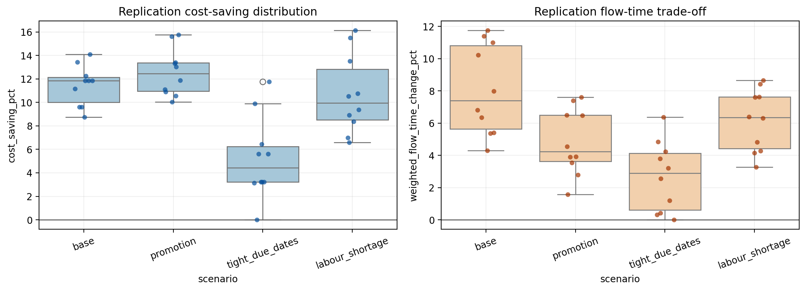

Portfolio Summary
The project compares an integrated exact MIP against a two-stage exact benchmark across baseline, promotion, tight-due-date, and labor-shortage settings. It is packaged as a personal public project with synthetic, reproducible data and generated outputs.
Experiment Results
The integrated model reduces labor cost while preserving service feasibility. Weighted flow time may increase slightly because the model prioritizes zero tardiness and lower staffing peaks.
| Scenario | Integrated Cost | Sequential Cost | Saving | Saving % | Late Orders |
|---|---|---|---|---|---|
| base | 609.40 | 704.92 | 95.52 | 13.55% | 0 |
| promotion | 704.92 | 792.44 | 87.52 | 11.04% | 0 |
| tight_due_dates | 661.16 | 678.64 | 17.48 | 2.58% | 0 |
| labour_shortage | 613.77 | 704.89 | 91.12 | 12.93% | 0 |
From Baseline To Modules
Technical Highlights
Business Algorithm Framing
Converts a fulfillment planning process into a measurable decision system with costs, service levels, capacity rules, and labor flexibility.
Exact Optimization
Uses Gurobi-backed MIP models and a carefully defined sequential benchmark rather than comparing against a weak heuristic.
Reproducible Analytics
Exports scenario inputs, KPI tables, figures, validation summaries, and cross-environment diagnostics for auditability.
Selected Figures

